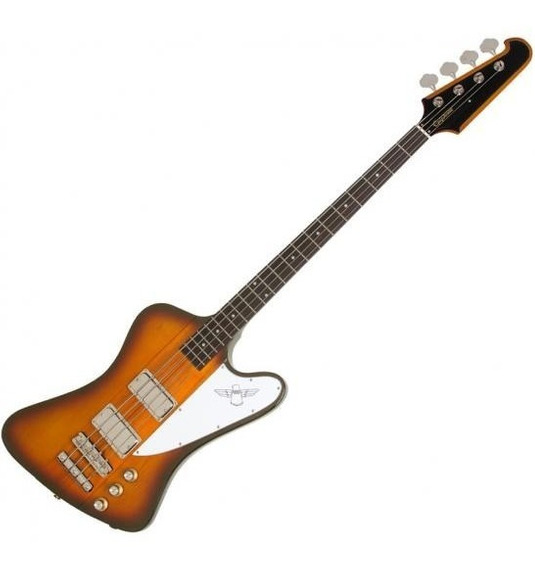

0

Bajo Epiphone Thunderbird '60s Bass
El Epiphone Thunderbird Vintage PRO Bass es una reproducción increíblemente precisa del bajo eléctrico clásico presentado por primera vez en 1963 que desde entonces ha impulsado docenas de éxitos de artistas como The Who, Lynyrd Skynyrd y Cheap Trick. Con nuevos ProBucker Bass Humbuckers y un puente Tune-o-matic de estilo vintage de los años 60 y cordal Claw.